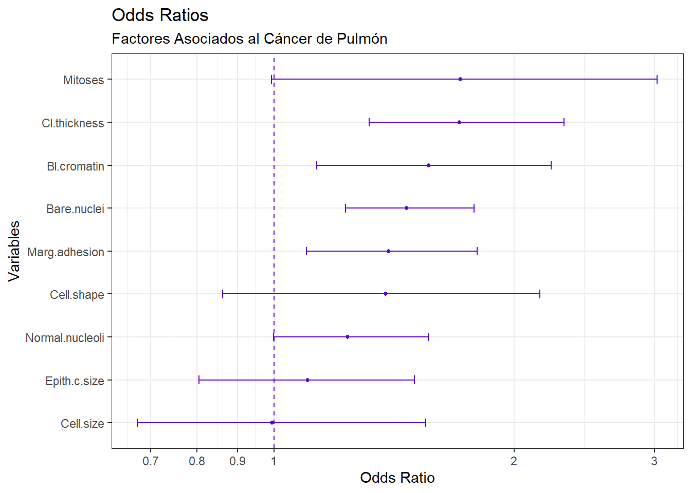
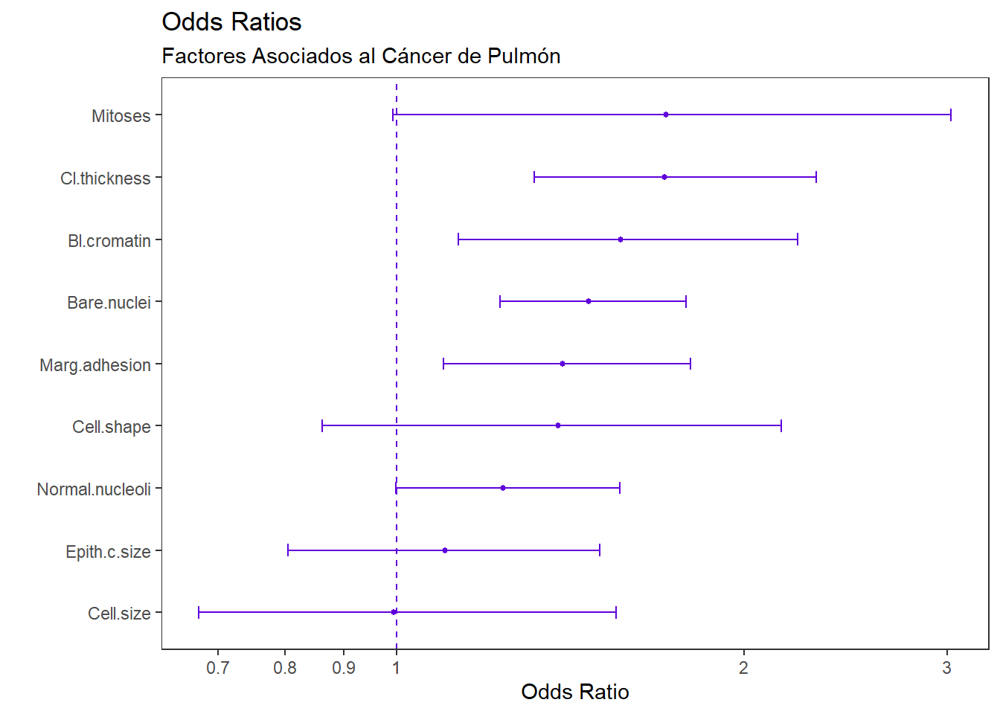
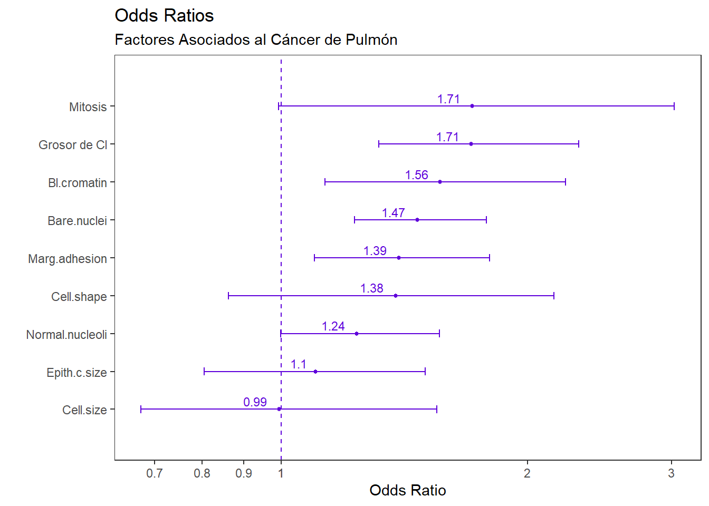

install.packages("OddsPlotty")
install.packages("tidyverse")
install.packages("mlbench")En este tutorial revisaremos el uso de la nueva librería OddsPlotty para la generación de gráficos de Odds Ratio.
Video explicativo
Librarías de Trabajo
El siguiente código sirve para instalar las librerías a usar:
Ahora, activa las librerías:
library(tidyverse)
library(OddsPlotty)
library(mlbench) # para cargar la base de datosTransformación inicial de la base de datos
Este paso no es necesario siempre. El objetivo es eliminar filas sin datos (incompletas), eliminar columnas que no vayan a ser usadas en el modelo GLM, y, para efectos de este ejercicio simple, convertir en numéricas las columnas factor.
# Cargamos la base de datos BreastCancer
data("BreastCancer")
# Vista previa
head(BreastCancer) Id Cl.thickness Cell.size Cell.shape Marg.adhesion Epith.c.size
1 1000025 5 1 1 1 2
2 1002945 5 4 4 5 7
3 1015425 3 1 1 1 2
4 1016277 6 8 8 1 3
5 1017023 4 1 1 3 2
6 1017122 8 10 10 8 7
Bare.nuclei Bl.cromatin Normal.nucleoli Mitoses Class
1 1 3 1 1 benign
2 10 3 2 1 benign
3 2 3 1 1 benign
4 4 3 7 1 benign
5 1 3 1 1 benign
6 10 9 7 1 malignant# Transformación
BreastCancer <- BreastCancer %>%
select(-1) %>% # eliminar columnas que se vayan a usar
mutate_if(is.factor, as.numeric) %>% # convertir columnas factores a numéricas
mutate(Class = factor(Class)) %>% #convertir a factor la variable respuesta
filter(complete.cases(.)) # eliminar filas incompletas Modelo lineal
# Crear el modelo generalizado lineal (GLM): regresión logística
mod1 <- glm(Class ~ ., data = BreastCancer, family = binomial(link = "logit"))
# Resumen estadístico del modelo
summary(mod1)
Call:
glm(formula = Class ~ ., family = binomial(link = "logit"), data = BreastCancer)
Deviance Residuals:
Min 1Q Median 3Q Max
-3.4855 -0.1152 -0.0619 0.0222 2.4702
Coefficients:
Estimate Std. Error z value Pr(>|z|)
(Intercept) -10.110096 1.173774 -8.613 < 2e-16 ***
Cl.thickness 0.535256 0.141938 3.771 0.000163 ***
Cell.size -0.005943 0.209158 -0.028 0.977332
Cell.shape 0.322136 0.230644 1.397 0.162510
Marg.adhesion 0.330694 0.123462 2.679 0.007395 **
Epith.c.size 0.096797 0.156568 0.618 0.536415
Bare.nuclei 0.383015 0.093865 4.080 4.49e-05 ***
Bl.cromatin 0.447401 0.171392 2.610 0.009044 **
Normal.nucleoli 0.213074 0.112894 1.887 0.059109 .
Mitoses 0.538551 0.325615 1.654 0.098138 .
---
Signif. codes: 0 '***' 0.001 '**' 0.01 '*' 0.05 '.' 0.1 ' ' 1
(Dispersion parameter for binomial family taken to be 1)
Null deviance: 884.35 on 682 degrees of freedom
Residual deviance: 102.90 on 673 degrees of freedom
AIC: 122.9
Number of Fisher Scoring iterations: 8Gráfico con OddsPlotty
# Gráfico inicial
OR <- odds_plot(mod1,
title = "Odds Ratios",
subtitle = "Factores Asociados al Cáncer de Pulmón",
point_col = "#5f00db",
error_bar_colour = "#5f00db",
point_size = 1,
error_bar_width = 0.2,
h_line_color = "#5f00db")Waiting for profiling to be done...OR$odds_plot
# Adicionar un tema, eliminar leyenda y etiqueta del eje Y
ORplot <- OR$odds_plot+
theme_test()+
theme(legend.position = "none")+
labs(x="")
ORplot
# Adicionar valores de Odds Ratio
ORplot +
geom_text(label = round(OR$odds_data$OR, digits = 2), size=3,
hjust = 1.5, vjust = -0.35, color="#5f00db")+
# scale_x_discrete() te ayudará a modificar las etiquetas del eje Y.
# Por ejemplo, modificar Mitoses por Mitosis, o Cl.thickness por
# Grosor de Cl:
scale_x_discrete(expand=c(0.15,0.15),
label = c("Mitoses"="Mitosis",
"Cl.thickness"="Grosor de Cl"))
Inspeccionar la información de Odds Ratios
OR$odds_data %>% as.data.frame() OR lower upper vars
1 1.7078851 1.3160488 2.311339 Cl.thickness
2 0.9940746 0.6738898 1.550114 Cell.size
3 1.3800729 0.8617778 2.155328 Cell.shape
4 1.3919332 1.0975034 1.798580 Marg.adhesion
5 1.1016369 0.8052066 1.499293 Epith.c.size
6 1.4666999 1.2298023 1.783756 Bare.nuclei
7 1.5642407 1.1313483 2.225679 Bl.cromatin
8 1.2374760 0.9981626 1.561486 Normal.nucleoli
9 1.7135219 0.9926455 3.025957 Mitoses